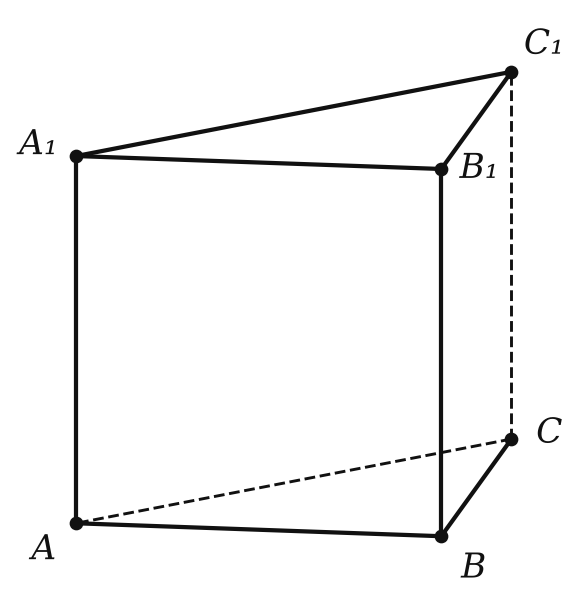
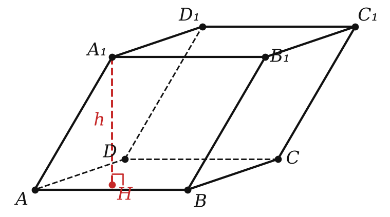
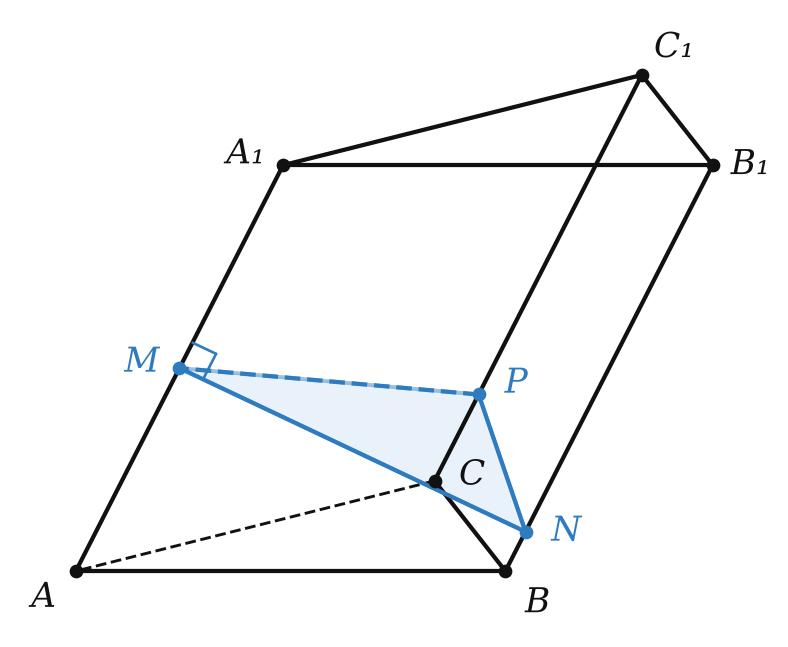
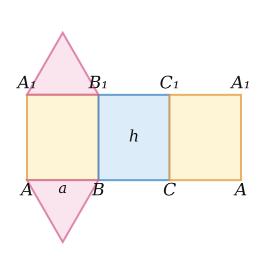

многогранники и их поверхность


| призма | признак |
|---|---|
| прямая | боковые рёбра ⊥ основанию |
| правильная | прямая + правильный многоугольник в основании |
| наклонная | не прямая |

Три прямоугольника a × h в ряд и два правильных треугольника. S_полн = 3ah + 2 · a²√3/4.

Теорема 19.1 — с доказательством